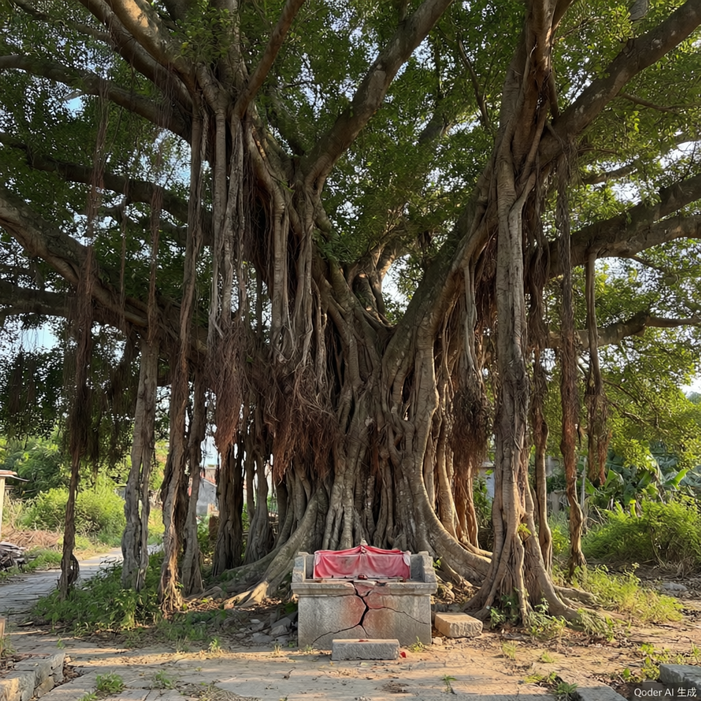

潮闻 · 手机版
查看 @ashui_2001 的主页需要先登录
账号
密码
登录
阿月在论坛第一楼里把她弟弟的账号密码贴上去了。回去看一眼。
此账号最后一次登录：2024.08.19 03:47
← 返回论坛
← 返回论坛
阿水
47 条动态
🌊
阿水
@ashui_2001
跑野点。空心村 / 没人接的庙 / 废弃学校。不接私活，不带路。
📍 闽南 · 常年在路上
2001年生
🔗 47 动态 · 128 关注 · 89 粉丝
🌊
阿水
@ashui_2001
8月19日
[此条动态已删除]
🌊
阿水
@ashui_2001
8月17日
是我。
♡ 0
💬 0
↗ 0
🌊
阿水
@ashui_2001
8月15日
后殿那道门我推开了。里头有一本簿子。拍了几张，手抖，回去再看。
📖 点击查看
♡ 1
💬 0
↗ 0
🌊
阿水
@ashui_2001
8月14日
那天夜里在庙外头录了一段。里面有人说话，听不清讲什么，但那个调调不像念经，倒像在
点名
。
[ 录音文件 · temple_night_0811.wav ]
🎙️ 点击听录音
♡ 2
💬 0
↗ 0
🌊
阿水
@ashui_2001
8月13日
祠堂门上一张红纸，五个名字。我想知道他们自己晓不晓得。
EXIF: 24.6183°N, 118.0894°E
♡ 5
💬 2
↗ 0
🌊
阿水
@ashui_2001
8月11日
庙里在择日子。我在门口站了半个钟头，出来进去的人没有一个看我。回去那条巷子有人跟了一段，我没敢回头。
#不要告诉别人我查了这个
♡ 3
💬 1
↗ 0
🌊
阿水
@ashui_2001
8月10日
找到了村里的"官方网站"。做得还挺像样的。但是你们仔细看参观须知……第七条是什么意思？
→ 埕尾村潮生宫官网
♡ 6
💬 4
↗ 2
🌊
阿水
@ashui_2001
8月8日
村里就剩一家小卖部。买电池的时候老板娘问我找谁。我说住几天，没找谁。她"哦"了一声，问我"这村子有什么好拍的"。我说没什么，随便走走。她找钱找得慢得要死。
♡ 8
💬 5
↗ 0
🌊
阿水
@ashui_2001
8月5日
去了趟庙里。后面那道门不让进。问为什么，只说在准备东西，别的一个字不讲。我在那儿坐了半个钟头，庙祝一直站着。
♡ 2
💬 0
↗ 0
🌊
阿水
@ashui_2001
8月3日
住处是我自己找的，床倒是有。鱼在小卖部买的，不太会弄，煎糊了。屋里没WiFi，一到这儿流量就剩一格，传张图半小时。
♡ 1
💬 1
↗ 0
🌊
阿水
@ashui_2001
8月2日
到了。村子在半山那面，海味儿很重。街上没人，狗比人多。
#埕尾村

📷 点击查看照片集
♡ 12
💬 3
↗ 1
🌊
阿水
@ashui_2001
7月28日
刷了三年这个吧，头一回刷到我想去的地方。有个村留着一种祭礼，据说不是年年办。底下全在吵真假。真假有什么好吵的，去了就知道。假请好了，二号的客车。
#埕尾村
#跑野点
♡ 31
💬 9
↗ 2
— 没有更早的动态了 —
🏠
首页
🖼️
相册
✉️
消息